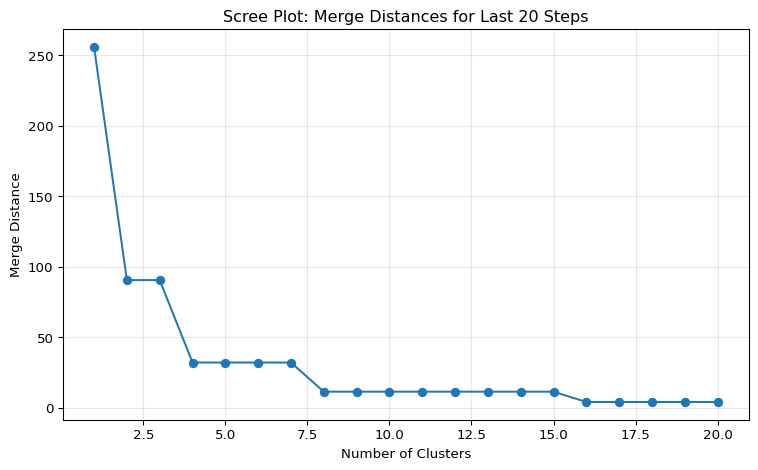
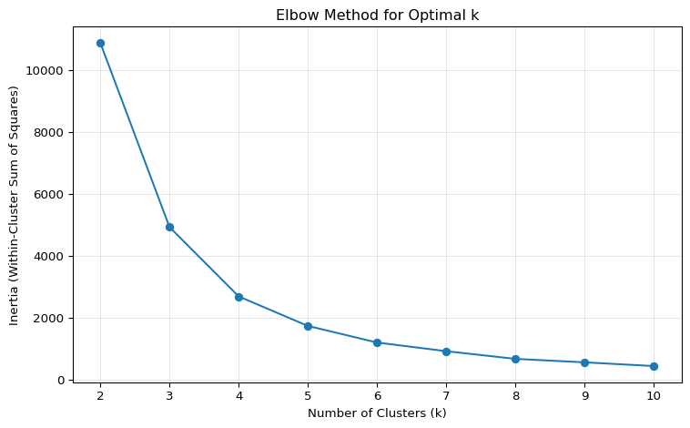

Clustering is an unsupervised machine learning technique that groups similar observations together without predefined labels. Unlike classification (which requires labeled training data), clustering discovers patterns and structures in data automatically.
Why clustering matters for humanities research:
Exploratory analysis: Discover natural groupings in texts, time periods, or authors
Pattern recognition: Identify thematic similarities across disparate sources
Periodization: Group time periods by linguistic similarity rather than arbitrary boundaries
Document organization: Sort large corpora into coherent themes or styles
Hypothesis generation: Let data suggest which texts merit comparative close reading
This tutorial introduces two fundamental clustering methods widely used in humanities text analysis:
Hierarchical Clustering: Creates nested groupings visualized as dendrograms (tree diagrams)
K-Means Clustering: Partitions data into a specified number of distinct groups
Both methods appear throughout this course: hierarchical clustering in time series analysis (Variability-Based Neighbor Clustering), topic modeling (document similarity), and spaCy workflows; k-means in contextual embeddings for semantic grouping.
10.2 Core Concepts
10.2.1 What Makes Observations “Similar”?
Clustering requires a distance metric to measure similarity:
Euclidean distance: Straight-line distance in multi-dimensional space (most common)
Cosine similarity: Angle between vectors (often used for text, converted to distance)
Manhattan distance: Sum of absolute differences along each dimension
Correlation distance: Based on correlation coefficient
For text data, we typically represent documents as:
Word frequency vectors: Each dimension is a word, each value is a count/proportion
TF-IDF vectors: Weighted by how distinctive each word is
Topic distributions: Proportions across latent topics (from topic models)
Embeddings: Dense semantic vectors from neural models (word2vec, BERT)
10.2.2 Unsupervised vs. Supervised
Clustering (unsupervised):
No predefined labels (“wartime speech”, “Hamilton”)
Algorithm discovers groupings based on similarity
Researcher interprets what clusters mean
Exploratory, hypothesis-generating
Classification (supervised):
Requires labeled training data
Algorithm learns to predict labels for new observations
Hierarchical clustering creates a tree structure (dendrogram) showing how observations group at different similarity thresholds. It’s “bottom-up” (agglomerative): each observation starts as its own cluster, then pairs merge iteratively based on similarity.
10.3.1 How It Works
Start: Each observation is its own cluster (n clusters)
Merge: Find the two closest clusters and combine them
Repeat: Continue merging until all observations are in one cluster
Result: Tree structure showing all possible groupings
10.3.2 Linkage Methods
Linkage defines how to measure distance between clusters (not individual points):
Single linkage (nearest neighbor): - Distance = minimum distance between any two points in different clusters - Creates “chaining” effect (long, stretched clusters) - Sensitive to outliers - Rarely used for text
Complete linkage (farthest neighbor): - Distance = maximum distance between any two points in different clusters - Creates compact, spherical clusters - Good for well-separated groups
Average linkage: - Distance = average of all pairwise distances between clusters - Compromise between single and complete - Robust to noise
Ward’s linkage (minimum variance): - Minimizes within-cluster variance at each merge - Creates balanced, compact clusters - Most common for humanities text analysis - Default in many tools
10.3.3 Example: Inaugural Address Periodization
Let’s cluster presidential inaugural addresses by word frequencies to discover historical periods:
import polars as plimport numpy as npfrom scipy.cluster.hierarchy import dendrogram, linkage, fclusterfrom scipy.spatial.distance import pdist, squareformimport matplotlib.pyplot as pltimport seaborn as sns# Load inaugural address data (word frequencies by document)url ="https://github.com/browndw/humanities_analytics/raw/refs/heads/main/data/data_tables/inaugural_subset.csv"inaugural_df = pl.read_csv(url)print(f"Data shape: {inaugural_df.shape}")print("\nFirst few rows:")print(inaugural_df.head())
Data shape: (32, 4)
First few rows:
shape: (5, 4)
┌──────┬───────────┬────────────────┬─────────────────────────────────┐
│ year ┆ president ┆ doc_id ┆ text │
│ --- ┆ --- ┆ --- ┆ --- │
│ i64 ┆ str ┆ str ┆ str │
╞══════╪═══════════╪════════════════╪═════════════════════════════════╡
│ 1901 ┆ McKinley ┆ 1901-McKinley ┆ My fellow-citizens, when we as… │
│ 1905 ┆ Roosevelt ┆ 1905-Roosevelt ┆ My fellow citizens, no people … │
│ 1909 ┆ Taft ┆ 1909-Taft ┆ My fellow citizens: Anyone who… │
│ 1913 ┆ Wilson ┆ 1913-Wilson ┆ There has been a change of gov… │
│ 1917 ┆ Wilson ┆ 1917-Wilson ┆ My Fellow citizens: The four y… │
└──────┴───────────┴────────────────┴─────────────────────────────────┘
Data structure: Each row is a president, each column is a word frequency (or TF-IDF score).
# Prepare data for clustering# Extract document identifiers and feature matrixdoc_ids = inaugural_df.select('doc_id').to_numpy().flatten()# Select only numeric columns (word frequencies, TF-IDF scores, etc.)# Include additional numeric types to capture all possible numeric columnsnumeric_cols = [col for col in inaugural_df.columns if inaugural_df[col].dtype in [pl.Float64, pl.Float32, pl.Int64, pl.Int32, pl.UInt32, pl.UInt64, pl.Int16, pl.Int8, pl.UInt16, pl.UInt8]]# If no numeric columns found, select all columns except known metadataiflen(numeric_cols) ==0:print("Warning: No numeric columns detected. Using all columns except metadata.") numeric_cols = [col for col in inaugural_df.columns if col notin ['doc_id', 'year', 'president', 'party', 'text', 'full_text']]print(f"Selected {len(numeric_cols)} numeric columns")# Convert to numpy array (observations × features) with explicit float dtypeX = inaugural_df.select(numeric_cols).to_numpy().astype(np.float64)print(f"Feature matrix: {X.shape} ({X.shape[0]} documents, {X.shape[1]} features)")
Figure 10.1: Hierarchical clustering of inaugural addresses (Ward’s linkage). Height indicates dissimilarity; cutting at different heights produces different numbers of clusters.
Reading the dendrogram:
X-axis: Individual documents (leaves)
Y-axis: Distance at which clusters merge (dissimilarity)
Height of branches: Smaller height = more similar
Horizontal cut line: Determines number of clusters
Documents connected at lower heights are more similar. Cutting the tree at different heights creates different numbers of clusters.
10.3.6 Choosing Number of Clusters
Visual inspection: Look for long vertical branches (large distances between merges) suggesting natural groupings.
Scree plot (elbow method): Plot distances where merges occur, look for “elbow” where merging becomes less informative:
# Extract distances from last 20 mergeslast_merges = linkage_matrix[-20:, 2]n_clusters = np.arange(1, 21)plt.figure(figsize=(8, 5))plt.plot(n_clusters, last_merges[::-1], marker='o')plt.xlabel('Number of Clusters')plt.ylabel('Merge Distance')plt.title('Scree Plot: Merge Distances for Last 20 Steps')plt.grid(alpha=0.3)plt.tight_layout()plt.show()

Figure 10.2: Scree plot showing merge distances. The ‘elbow’ suggests optimal number of clusters.
Interpretation: Look for where the curve “bends” (the elbow). Before the elbow, merges create distinct clusters; after, you’re just splitting similar observations.
10.3.7 Assign Cluster Labels
# Cut dendrogram at specified height or number of clustersn_clusters =4cluster_labels = fcluster(linkage_matrix, n_clusters, criterion='maxclust')# Add to dataframeinaugural_clustered = inaugural_df.with_columns( pl.Series('cluster', cluster_labels))print(f"Cluster assignments (first 10):")print(inaugural_clustered.select(['doc_id', 'year', 'cluster']).head(10))print("\nCluster sizes:")print(inaugural_clustered.group_by('cluster').agg(pl.count()).sort('cluster'))
/tmp/ipykernel_3123/464779580.py:14: DeprecationWarning: `pl.count()` is deprecated. Please use `pl.len()` instead.
(Deprecated in version 0.20.5)
print(inaugural_clustered.group_by('cluster').agg(pl.count()).sort('cluster'))
10.3.8 Interpret Clusters
# Examine which documents are in each clusterfor i inrange(1, n_clusters +1): cluster_docs = inaugural_clustered.filter(pl.col('cluster') == i) doc_list = cluster_docs.select('doc_id').to_numpy().flatten() years = cluster_docs.select('year').to_numpy().flatten()print(f"\nCluster {i} (n={len(doc_list)}):")iflen(years) >0:print(f" Years: {int(min(years))} - {int(max(years))}")print(f" Documents: {', '.join(str(d) for d in doc_list[:5])}", end="")iflen(doc_list) >5:print(f", ... (+{len(doc_list)-5} more)")else:print()
Figure 10.3: Comparison of linkage methods. Ward’s typically creates the most balanced, interpretable clusters for text data.
Observations:
Single linkage: “Chaining” effect (one long cluster)
Complete linkage: More balanced, but may split natural groups
Average linkage: Middle ground
Ward’s linkage: Most balanced, compact clusters (usually preferred)
10.4 K-Means Clustering
K-means is a partitioning method that divides data into k distinct, non-overlapping clusters. Unlike hierarchical clustering, you must specify k in advance.
10.4.1 How It Works
Initialize: Randomly place k cluster centers (centroids) in feature space
Assign: Assign each observation to nearest centroid
Update: Recalculate centroid as mean of assigned observations
Repeat: Steps 2-3 until centroids stop moving (convergence)
Result: k clusters with each observation assigned to exactly one cluster
10.4.2 Advantages & Disadvantages
Advantages:
Fast: Scales well to large datasets
Simple: Easy to implement and interpret
Definite assignments: Each observation belongs to exactly one cluster
Works with many features: Handles high-dimensional data (embeddings)
Disadvantages:
Requires k: Must specify number of clusters in advance
Sensitive to initialization: Different starting points can produce different results (use n_init parameter)
Assumes spherical clusters: Struggles with elongated or irregular shapes
Sensitive to outliers: Extreme values distort centroids
10.4.3 Example: Clustering by Semantic Content
Using contextual embeddings (from Mini Lab 11), we can cluster presidential speeches by semantic content rather than word overlap:
# Assume we have sentence embeddings for inaugural addresses# (In practice, these would come from a transformer model like BERT)# For this example, simulate embeddings from the word frequency matrix# In real analysis, use actual embeddings from sentence-transformersfrom sklearn.decomposition import PCAfrom sklearn.cluster import KMeans# Reduce dimensionality for visualization (simulate embeddings)# Set n_components to min of 50 or the available features/samplesn_components =min(50, X.shape[0] -1, X.shape[1])pca = PCA(n_components=n_components, random_state=42)embeddings = pca.fit_transform(X)print(f"Embedding matrix: {embeddings.shape}")
Embedding matrix: (32, 1)
10.4.4 Choosing k: Elbow Method
# Test different values of kinertias = []k_range =range(2, 11)for k in k_range: kmeans = KMeans(n_clusters=k, random_state=42, n_init=10) kmeans.fit(embeddings) inertias.append(kmeans.inertia_)# Plotplt.figure(figsize=(8, 5))plt.plot(k_range, inertias, marker='o')plt.xlabel('Number of Clusters (k)')plt.ylabel('Inertia (Within-Cluster Sum of Squares)')plt.title('Elbow Method for Optimal k')plt.grid(alpha=0.3)plt.tight_layout()plt.show()

Figure 10.4: Elbow plot for k-means. Choose k where adding more clusters provides diminishing returns (the ‘elbow’).
Inertia: Sum of squared distances from each point to its cluster centroid. Lower is better, but we want the “elbow” where improvement plateaus.
10.4.5 Choosing k: Silhouette Score
from sklearn.metrics import silhouette_score# Calculate silhouette scoressilhouette_scores = []for k in k_range: kmeans = KMeans(n_clusters=k, random_state=42, n_init=10) labels = kmeans.fit_predict(embeddings) score = silhouette_score(embeddings, labels) silhouette_scores.append(score)# Plotplt.figure(figsize=(8, 5))plt.plot(k_range, silhouette_scores, marker='o', color='orange')plt.xlabel('Number of Clusters (k)')plt.ylabel('Silhouette Score')plt.title('Silhouette Method for Optimal k')plt.grid(alpha=0.3)plt.tight_layout()plt.show()print("\nSilhouette scores by k:")for k, score inzip(k_range, silhouette_scores):print(f" k={k}: {score:.3f}")
/tmp/ipykernel_3123/1313964696.py:17: DeprecationWarning: `pl.count()` is deprecated. Please use `pl.len()` instead.
(Deprecated in version 0.20.5)
print(inaugural_kmeans.group_by('kmeans_cluster').agg(pl.count()).sort('kmeans_cluster'))
10.4.7 Visualize Clusters
# Further reduce to 2D for visualizationn_dims_viz =min(2, embeddings.shape[1])pca_2d = PCA(n_components=n_dims_viz, random_state=42)coords_2d = pca_2d.fit_transform(embeddings)# Plotplt.figure(figsize=(10, 8))# If we only have 1 dimension, plot as 1D scatter with jitterif n_dims_viz ==1: scatter = plt.scatter( coords_2d[:, 0], np.random.normal(0, 0.02, size=len(coords_2d)), # Add jitter on y-axis c=kmeans_labels, cmap='viridis', s=100, alpha=0.6, edgecolors='black' ) plt.xlabel(f'PC1 ({pca_2d.explained_variance_ratio_[0]:.1%} variance)') plt.ylabel('Random jitter')else: scatter = plt.scatter( coords_2d[:, 0], coords_2d[:, 1], c=kmeans_labels, cmap='viridis', s=100, alpha=0.6, edgecolors='black' ) plt.xlabel(f'PC1 ({pca_2d.explained_variance_ratio_[0]:.1%} variance)') plt.ylabel(f'PC2 ({pca_2d.explained_variance_ratio_[1]:.1%} variance)')# Add labels for select pointsfor i, doc_id inenumerate(doc_ids):if i %3==0: # Label every 3rd document to avoid crowding y_coord = coords_2d[i, 1] if n_dims_viz ==2else np.random.normal(0, 0.02) plt.annotate(str(doc_id), (coords_2d[i, 0], y_coord), fontsize=8, alpha=0.7 )plt.colorbar(scatter, label='Cluster')plt.title('K-Means Clustering (Visualized in 2D via PCA)')plt.tight_layout()plt.show()
Do clusters correspond to thematic concerns (war, prosperity, reform)?
Do clusters align with political parties or historical eras?
Which speeches bridge multiple clusters (high silhouette vs. low silhouette)?
10.4.9 Cluster Centroids
# Get centroid coordinatescentroids = kmeans.cluster_centers_# Find most representative document in each cluster (closest to centroid)from scipy.spatial.distance import cdistdistances_to_centroids = cdist(embeddings, centroids, metric='euclidean')print("\nMost representative document per cluster:")for i inrange(k): closest_idx = np.argmin(distances_to_centroids[:, i])print(f" Cluster {i}: {str(doc_ids[closest_idx])}")
Most representative document per cluster:
Cluster 0: 1977-Carter
Cluster 1: 1913-Wilson
Cluster 2: 2009-Obama
Cluster 3: 1945-Roosevelt
Interpretation: The document closest to the centroid is the most “typical” member of that cluster—a good starting point for close reading.
10.5 Hierarchical vs. K-Means: When to Use Each
Aspect
Hierarchical
K-Means
Number of clusters
Don’t need to specify; explore dendrogram
Must specify k in advance
Visualization
Dendrogram shows all possible groupings
Requires dimensionality reduction for viz
Computation
Slower (O(n² log n))
Faster (O(nki))
Dataset size
Works for small-medium datasets (<1000)
Scales to large datasets (>10,000)
Cluster shape
Handles irregular shapes
Assumes spherical clusters
Interpretation
Tree structure shows relationships
Clear assignments, but no hierarchy
Stability
Deterministic (same result every time)
Random initialization (use n_init)
Use cases
Periodization, document similarity, exploratory
Thematic grouping, large corpora
Rule of thumb:
Small datasets (<500 observations) with exploratory goals: Use hierarchical
Large datasets (>1000 observations) with known k: Use k-means
Both together: Use hierarchical to choose k, then k-means for final clustering
10.6 Applications in Humanities Research
10.6.1 Historical Periodization
Problem: When did linguistic shifts occur? Do conventional period boundaries (centuries, decades) align with actual language change?
Solution: Hierarchical clustering of time periods by word frequencies (Variability-Based Neighbor Clustering).
Example: Mini Lab 7 clusters decades of the Brown corpus, revealing that 1800-1930 form one period, 1940-1980 another, with 1990-2000 as distinct modern periods.
Advantages:
Data-driven periodization (not arbitrary bins)
Dendrograms show gradual vs. sharp transitions
Quantifies similarity across time
10.6.2 Thematic Discovery in Corpora
Problem: You have 500 journal articles. What thematic groups exist?
Solution: K-means clustering on contextual embeddings.
Example: Cluster research articles by abstract embeddings. Discover that apparent clusters correspond to methodological approaches (quantitative vs. qualitative) rather than topic areas.
Advantages:
Semantic similarity (not just word overlap)
Handles large corpora efficiently
Reveals unexpected groupings
10.6.3 Authorship and Style
Problem: Do texts cluster by author, genre, or time period?
Solution: Hierarchical clustering on stylometric features (function words, sentence length, etc.)
Example: Cluster novels by function word frequencies. If they cluster by author (not by genre or era), style is author-specific.
Advantages:
Dendrogram shows hierarchical relationships (author → period → genre)
Visualizes degrees of similarity
Identifies outliers (unusual texts)
10.6.4 Document Similarity in Topic Modeling
Problem: After fitting a topic model, which documents are similar based on topic distributions?
Solution: Hierarchical clustering on topic proportion vectors.
Example: Cluster presidential speeches by topic distributions. Wartime speeches cluster together regardless of era.
Different metrics emphasize different aspects of similarity:
Euclidean: Total difference in all dimensions (standard)
Cosine: Directional similarity (ignores magnitude, good for sparse text)
Correlation: Pattern similarity (ignores scale)
Manhattan: Sum of absolute differences (less sensitive to outliers)
For text data: Cosine distance often works better than Euclidean because it ignores document length (just looks at proportional similarity).
10.7.2 Feature Selection
Clustering quality depends on features:
Good features:
Function words: Capture style (authorship, genre)
Topic distributions: Capture content (themes)
Embeddings: Capture semantics (meaning)
TF-IDF: Captures distinctive vocabulary
Bad features:
Raw word counts: Biased by document length
All words: Noise overwhelms signal (dimensionality curse)
Rare words: Unstable, unreliable
Rule of thumb: Select features relevant to your research question. For style, use function words or syntactic features. For theme, use content words or embeddings.
10.7.3 Choosing the Number of Clusters
There’s no “correct” k—it’s a research decision informed by:
Quantitative criteria:
Elbow method (inertia or merge distances)
Silhouette score (cohesion vs. separation)
Gap statistic (compare to random data)
Qualitative criteria:
Interpretability (do clusters make sense?)
Research goals (what granularity is useful?)
Prior knowledge (do clusters align with known categories?)
Practical criteria:
Sample size (avoid tiny clusters: n < 5)
Comparison goals (need same k across datasets?)
Best practice: Test multiple values of k, examine cluster compositions, choose the most interpretable solution that addresses your research question.
10.7.4 Validating Clusters
Internal validation (uses only the data):
Silhouette coefficient: Are clusters cohesive and separated?
Davies-Bouldin index: Ratio of within-cluster to between-cluster distances (lower is better)
Calinski-Harabasz index: Ratio of between-cluster to within-cluster variance (higher is better)
External validation (uses known labels):
Adjusted Rand Index: Do clusters align with known categories?
V-measure: Harmonic mean of homogeneity and completeness
Qualitative validation:
Examine cluster members: Do they share meaningful properties?
Compare to expert judgments: Do historians agree with periodization?
Read representative texts: Does thematic interpretation hold up?
Reality check: Clusters are exploratory. They suggest patterns, not prove hypotheses. Always validate computationally-discovered groups through close reading and domain expertise.
Cluster compositions (which texts are in which clusters)
Reproducibility: Set random_state for k-means so results are replicable.
10.10 Ethical Considerations
10.10.1 Overgeneralization
Risk: Treating clusters as natural categories rather than analytical constructs.
Example: Clustering social media posts into “liberal” and “conservative” may obscure ideological complexity and diversity within groups.
Best practice: Present clusters as patterns in the data for this specific corpus with these features, not universal truths.
10.10.2 Decontextualization
Risk: Grouping texts by statistical similarity without considering historical/cultural context.
Example: Clustering enslaved persons’ narratives with abolitionist speeches because both use “freedom” frequently obscures power dynamics and authorial agency.
Best practice: Interpret clusters in context. Ask why these texts are similar and whether that similarity is meaningful given their social/historical positions.
10.10.3 Stereotype Reinforcement
Risk: Clusters may reflect and amplify societal biases present in training data.
Example: Clustering job applicants by résumé language might group by gender or race due to systematic differences in phrasing, perpetuating discrimination.
Best practice: Examine features driving clusters. Are they substantive or proxies for protected categories? Validate against known biases.
10.10.4 Reductive Categorization
Risk: Forcing continuous variation into discrete clusters obscures nuance.
Example: Clustering authors into “early modern” vs. “modern” styles may miss authors who blend traditions or evolved across their careers.
Best practice: Acknowledge clustering simplifies complexity. Consider fuzzy clustering (soft assignments) or report silhouette scores (confidence in assignments) to capture ambiguity.
10.11 Summary
Clustering discovers structure in data without predefined labels:
Hierarchical clustering:
Creates tree of nested groupings (dendrogram)
Linkage methods: single, complete, average, Ward’s (most common)
Distance metrics matter: Euclidean for general use, cosine for text
Feature selection is critical: Use features relevant to research question
Choosing k is a research decision: Balance quantitative criteria with interpretability
Validate qualitatively: Computational patterns suggest hypotheses; close reading confirms
Report transparently: Document methods, parameters, and validation metrics
Next steps: Apply clustering to your own data. Use hierarchical clustering for exploratory periodization, k-means for thematic grouping. Combine with other methods (topic modeling, embeddings, classification) for richer analysis.
10.12 Further Reading
Foundational:
Jain, A. K. (2010). Data clustering: 50 years beyond K-means. Pattern Recognition Letters, 31(8), 651-666. DOI
Murtagh, F., & Contreras, P. (2012). Algorithms for hierarchical clustering: An overview. Wiley Interdisciplinary Reviews: Data Mining and Knowledge Discovery, 2(1), 86-97. DOI
Humanities applications:
Gries, S. T., & Hilpert, M. (2008). The identification of stages in diachronic data: Variability-based neighbour clustering. Corpora, 3(1), 59-81. DOI
Eder, M. (2015). Visualization in stylometry: Cluster analysis using networks. Digital Scholarship in the Humanities, 32(1), 50-64. DOI
Underwood, T. (2019). Distant Horizons: Digital Evidence and Literary Change. University of Chicago Press. (Chapter 5: “The Life Spans of Genres”)